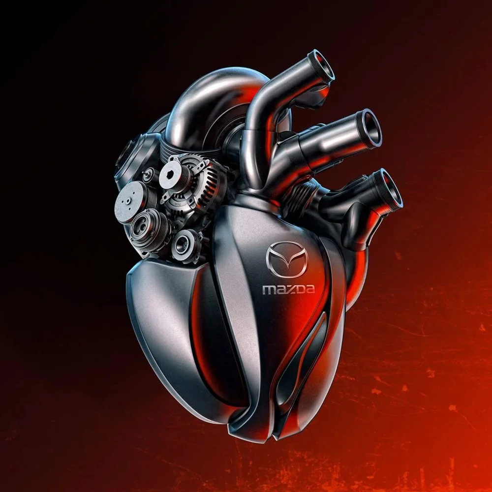

O nama
Samostalni EAST servis otvorili smo 2010, a Mazde radimo od 2000. — iz ovlašćenog Mazda servisa Profil International u Beogradu.
Ključna informacija
Neovlašćeni Mazda servis
Ne radimo pod ovlašćenjem Mazde. U Srbiji nezavisne radionice ne mogu da dobiju zvanično ovlašćenje proizvođača, kakvo postoji na primer u Austriji ili Nemačkoj — zato smo neovlašćeni servis. Mi smo nezavisni specijalisti za jednu marku, sa znanjem, opremom i pristupom na nivou ovlašćenog servisa.

Ko smo mi
EAST Auto Servis je specijalizovan za vozila marke Mazda. Naši mehaničari imaju višegodišnje iskustvo i međunarodne Mazda sertifikate.
Stalno ulaganje u opremu i obuku omogućilo nam je da danas imamo više od 2000 klijenata koji nam se vraćaju. Kod nas možete kompletno održavati svoje vozilo ili ceo vozni park: od automehanike i dijagnostike do popravki.
Specijalizovani za Mazda vozila
EAST Auto Servis je neovlašćeni Mazda servis sa 26 godina iskustva u radu na vozilima ove marke. Kao samostalan servis radimo od 2010. godine. Nismo ovlašćeni servis, već nezavisna radionica koja je svoje znanje, opremu i iskustvo usmerila na jednu marku. U Srbiji nezavisne radionice ne mogu da dobiju zvanično ovlašćenje proizvođača, kakvo postoji na primer u Austriji ili Nemačkoj — zato smo neovlašćeni servis, ali sa znanjem, opremom i pristupom na nivou ovlašćenog. Poznajemo Mazda vozila do detalja i vlasnicima nudimo stručan servis, jasnu komunikaciju i pošten odnos, bez nepotrebnih troškova.
Verujemo da je specijalizacija najbolji put do kvaliteta. Servis koji radi sve marke mora da poznaje stotine različitih sistema. Mi se bavimo jednim proizvođačem i zato tačno znamo gde da pogledamo, šta da proverimo i kako da problem rešimo iz prvog pokušaja.
Iskustvo i međunarodni Mazda sertifikati
Naši mehaničari imaju 26 godina iskustva u radu na Mazda vozilima i poseduju međunarodne Mazda sertifikate. To znači da su prošli obuku po standardima proizvođača i da tehnička rešenja ove marke poznaju iz prve ruke, a ne iz opštih priručnika.
Mazda razvija sopstvene tehnologije koje traže posebno znanje: SKYACTIV benzinske i dizel motore, specifične sisteme ubrizgavanja i izduvnih gasova, sisteme za uštedu goriva i savremenu elektroniku. Iskustvo sa desetinama istih modela pomaže nam da prepoznamo tipične simptome, znamo slabe tačke pojedinih generacija i predvidimo šta će vozilu uskoro trebati. Tako vozilo brže napušta radionicu, a vi izbegavate kvarove koji se mogu sprečiti na vreme.
Ulaganje u opremu i obuku
Automobili se menjaju iz godine u godinu, pa se menjamo i mi. Stalno ulažemo u opremu i obuku jer savremeno vozilo ne može pravilno da se servisira bez odgovarajućih alata, softvera i znanja. Redovno nabavljamo novu dijagnostičku i radioničku opremu i pratimo tehničke novosti. Naši mehaničari se kontinuirano usavršavaju kako bi bili spremni i za najnovije modele.
Ovo ulaganje nije samo u opremu. To je ulaganje u vaše poverenje, jer precizna dijagnostika i pravi alat znače manje nagađanja, manje nepotrebno zamenjenih delova i niže troškove za vas.
Više od 2000 klijenata koji nam se vraćaju
Danas imamo više od 2000 klijenata koji nam se redovno vraćaju. Na taj broj smo najponosniji, jer ga nismo postigli reklamom, već radom. Klijent koji se vrati posle prvog servisa pokazuje da je dobio ono što je očekivao: kvalitetno obavljen posao, jasno objašnjenje i fer cenu.
Mnogi naši klijenti godinama održavaju svoje vozilo kod nas. Neki su doveli i drugu Mazdu u porodici, a neki su nas preporučili prijateljima i kolegama. Takav odnos gradimo tako što uvek objasnimo šta je potrebno uraditi i zašto. Pre popravke dobijate informaciju o stanju vozila i predlog rešenja, a odluka je uvek vaša.
Kompletno održavanje na jednom mestu
Kod nas možete kompletno održavati svoje vozilo, bez obilaženja više radionica. Od prvog pregleda do složenih popravki, sve se radi pod istim krovom i od strane istog tima koji poznaje istoriju vašeg automobila.
Automehanika. Obavljamo sve mehaničarske radove na Mazda vozilima:
- redovni servisi i zamena ulja, filtera i potrošnog materijala
- radovi na kočionom sistemu
- trap i vešanje
- kvačilo i menjač
- rashladni sistem
- izduvni sistem
- zahtevniji radovi na motoru
Svaki servis radimo prema preporukama proizvođača i prilagođavamo ga stvarnom stanju i načinu korišćenja vozila.
Dijagnostika. Moderna Mazda je puna elektronike, pa je precizna dijagnostika prvi korak do ispravne popravke. Pomoću savremene dijagnostičke opreme brzo otkrivamo uzrok kvara, bilo da se radi o lampici na instrument tabli, nepravilnom radu motora ili problemu sa nekim od elektronskih sistema. Tačna dijagnoza znači da se menja samo ono što je zaista neispravno.
Popravke. Kada je popravka potrebna, radimo je temeljno i odgovorno, od manjih intervencija do većih kvarova. Koristimo kvalitetne delove, a pre početka rada vas upoznajemo sa opcijama i procenom troškova, bez iznenađenja pri preuzimanju vozila.
Elektronska servisna knjižica
Kompletnu evidenciju servisiranja vodimo u e-knjižici, elektronskoj servisnoj knjižici. Svaki servis, zamena delova i popravka beleži se digitalno, sa datumom, kilometražom i opisom obavljenih radova.
Tako je istorija vašeg vozila uvek tačna, pregledna i sačuvana. Nema izgubljenih papira, nečitkih pečata ni nagađanja kada je šta rađeno. E-knjižica pomaže i nama, jer pri svakom dolasku vidimo celu istoriju vozila i možemo da planiramo naredne radove. Kada jednog dana budete prodavali automobil, potpuna i proverljiva servisna istorija podiže njegovu vrednost i poverenje kupca.
Održavanje voznih parkova
Osim vozila fizičkih lica, održavamo i vozne parkove firmi koje koriste Mazda vozila. Za kompaniju je svaki dan kada vozilo stoji u radionici izgubljen dan. Zato nudimo organizovano održavanje koje smanjuje zastoje i olakšava planiranje.
Za vozne parkove pratimo servisne intervale svakog vozila, planiramo termine unapred i sve obavljene radove beležimo u elektronskoj servisnoj knjižici. Tako imate jasan pregled stanja celog voznog parka i troškova održavanja. Jedan partner za sva vozila znači jednostavniju komunikaciju, dosledan kvalitet i manje administracije.
Zašto nezavisni specijalizovani servis
Mnogi vlasnici Mazda vozila, naročito kada garantni rok istekne, traže servis koji nudi stručnost na nivou proizvođača, ali uz lični pristup i razumnije troškove. Upravo tu je EAST Auto Servis.
Kod nas dobijate:
- specijalizovano znanje o jednoj marki i 26 godina iskustva sa Mazda vozilima
- sertifikovane mehaničare sa međunarodnim Mazda sertifikatima
- savremenu opremu za dijagnostiku i popravke, koju stalno unapređujemo
- transparentnost, jer uvek znate šta se radi na vašem vozilu i zašto
- e-knjižicu, u kojoj je kompletna servisna istorija vašeg vozila uvek dostupna
- kompletnu uslugu na jednom mestu, za pojedinačno vozilo ili ceo vozni park
Vaša Mazda u pravim rukama
Mazda je automobil napravljen sa pažnjom prema detaljima, i zaslužuje isti takav odnos u servisu. Naš cilj je da vaše vozilo bude pouzdano, bezbedno i u najboljem stanju što duže, a da vi imate servis kome možete da verujete.
Bilo da vam je potreban redovan servis, otkrivanje uzroka kvara ili složena popravka, EAST Auto Servis je tu za vas. Zakažite termin i uverite se zašto nam se više od 2000 klijenata vraća.
Kako smo rasli
- 2000
Iskustvo u ovlašćenom servisu
Rad u ovlašćenom Mazda servisu Profil International u Beogradu.
- 2010
Otvaranje samostalnog servisa
EAST postaje nezavisna radionica specijalizovana isključivo za Mazda vozila.
- 2012
Proširenje radionice
Servis dobija dva servisna mesta, opremljena najsavremenijom opremom.
- Danas
Više od 2000 stalnih klijenata
Tim od četiri iskusna mehaničara i savremena dijagnostika.
Na čemu insistiramo
Znate šta plaćate
Svaki rad dogovaramo pre početka. Na kraju dobijate izveštaj o stanju vozila i preporuke.
Provereni delovi
Ugrađujemo delove renomiranih proizvođača ili originalne Mazda delove, po vašem izboru.
Garancija na rad
Na generalni remont motora dajemo garanciju. Iza svog posla stojimo.